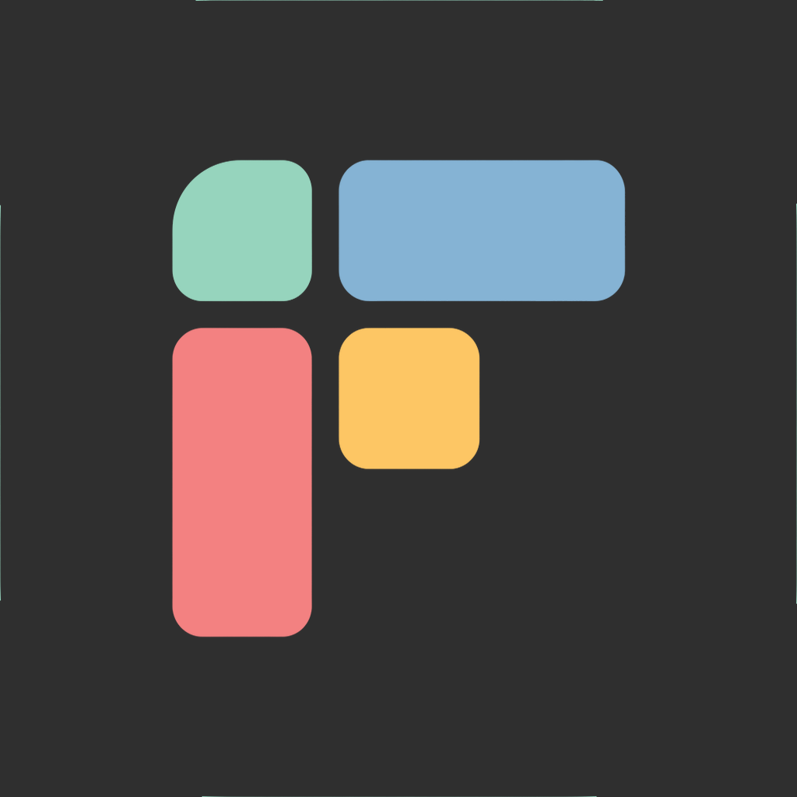

Find your rhythm.
Daily, weekly, and monthly routines for the things you return to.

FellowerMeet Fellower ↗A LITTLE CLARITY. A PLACE TO BEGIN.
Less noise. A little more intention.
Choose what matters, make time for it,
and take your day one thing at a time.
Made for iPhone & iPad
A SIMPLE DAILY RHYTHM
You don’t need to do everything.
Just make space for the right things.
A GLIMPSE OF FELLOWER · ILLUSTRATIVE PREVIEW
Some things get done. Some things move.
Review your day and see planned time alongside recorded work.
No perfect-day score. Just a clearer picture.
THOUGHTFUL BY NATURE
Daily, weekly, and monthly routines for the things you return to.
Home and Lock Screen widgets keep your day close at hand.
Local reminders, with time to prepare and room to snooze.
Projects and categories give your everyday work a little context.
20 SECONDS OF CLARITY
Choose what matters in the Matrix. Give it time in your Schedule. Focus on one thing with a session timer.
Choose. Schedule. Focus.